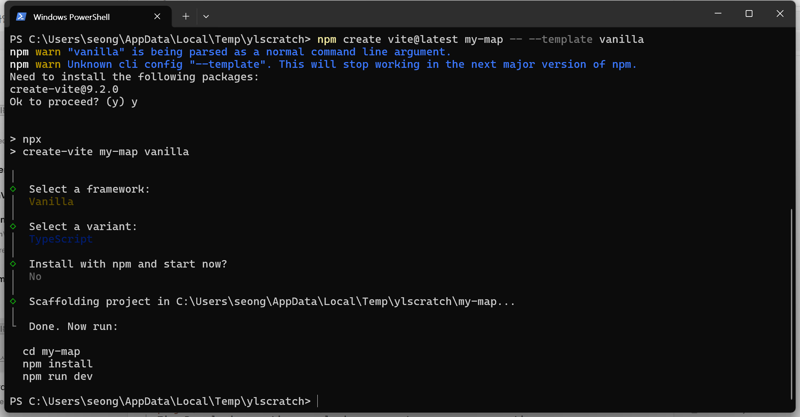
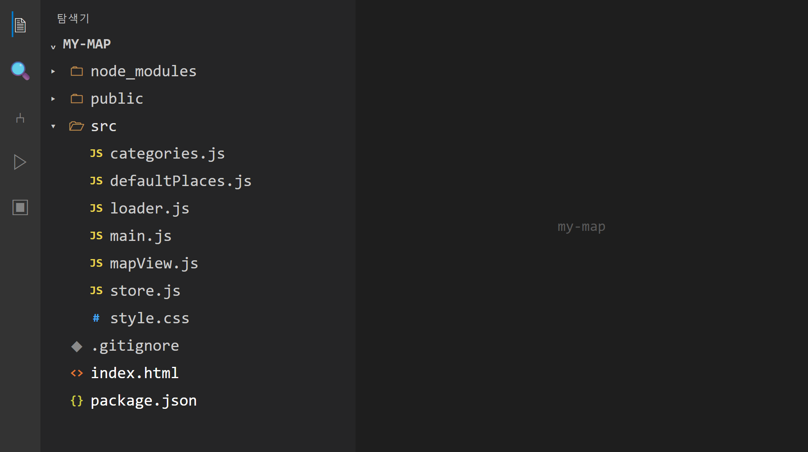
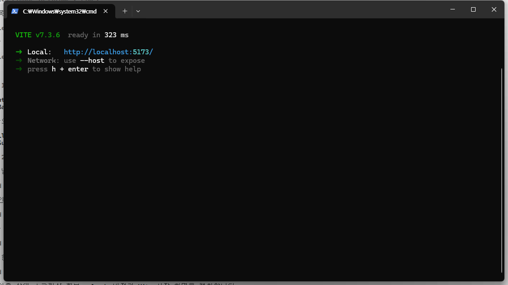
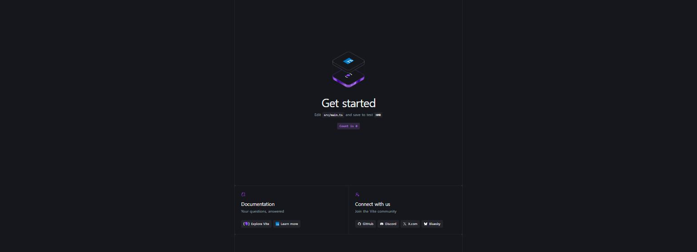
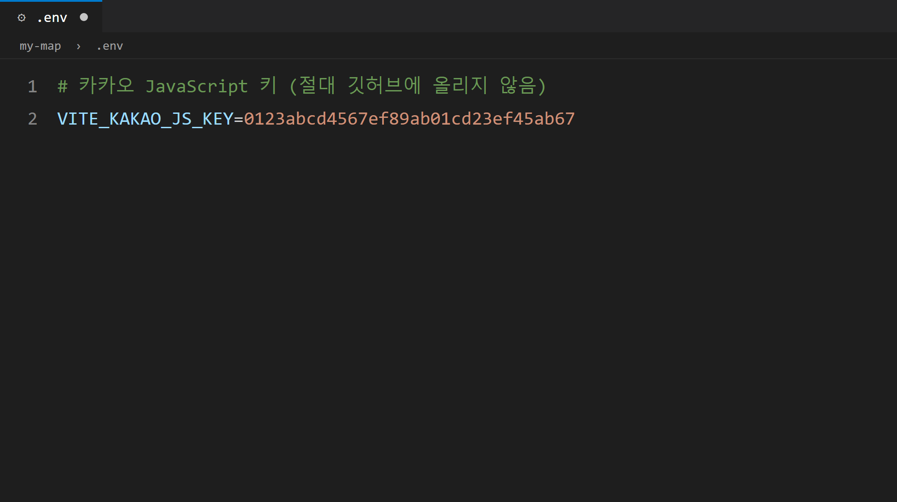
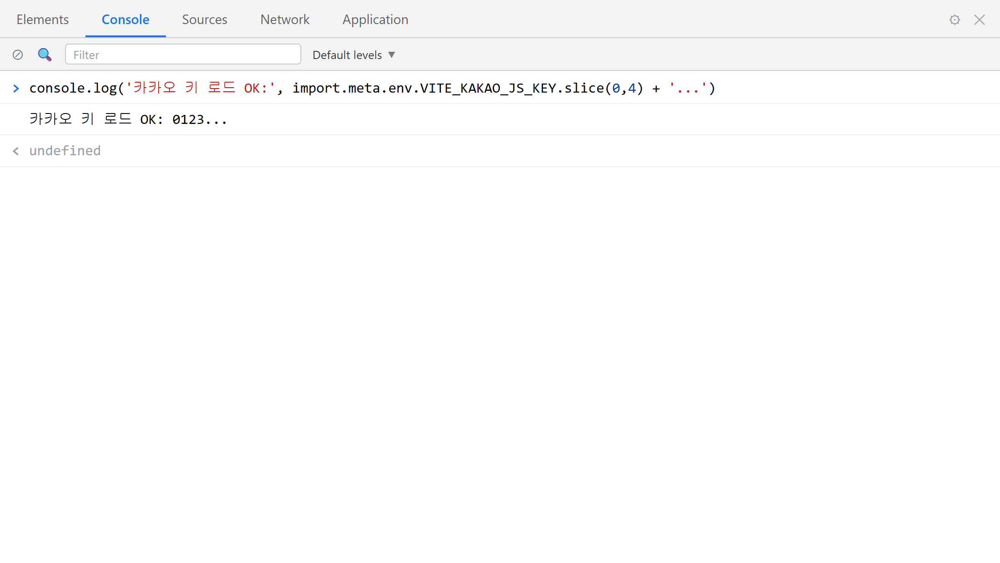

8장 Vite로 프로젝트 시작¶
이 장에서 배우는 것
- Vite가 무엇인지(개발 서버 + 빌드 도구) 이해합니다
- Claude Code에게 시켜
npm create vite로 프로젝트 뼈대를 만듭니다 - 생성된 폴더 구조와
package.json을 투어하며 각 파일의 역할을 파악합니다 npm run dev로 개발 서버를 켜고http://localhost:5173에 접속합니다- 7장에서 발급받은 JavaScript 키를
.env파일에 숨기고,.gitignore로 보호합니다 import.meta.env로 코드가 키를 읽어 오는 원리를 배웁니다
7장에서 우리는 카카오지도의 열쇠, JavaScript 키를 손에 넣었습니다. 그리고 카카오에게 "제 지도는 http://localhost:5173에서 돌아갈 거예요"라고 신고까지 마쳤습니다. 그런데 정작 그 주소에는 아직 아무것도 없습니다. 브라우저에 http://localhost:5173을 입력해 보세요. "사이트에 연결할 수 없음"이라는 차가운 화면만 보일 겁니다. 당연합니다. 그 주소에 살 집을 아직 짓지 않았으니까요.
이번 장에서 그 집의 뼈대를 세웁니다. 개발자들은 이 뼈대를 스캐폴드1라고 부릅니다. 건물을 지을 때 먼저 둘러 세우는 비계(공사용 발판)라는 뜻인데, 프로젝트의 기본 폴더와 설정 파일을 미리 갖춰진 틀로 찍어내는 것을 말합니다. 그리고 이 틀을 찍어내 주는 도구가 오늘의 주인공 Vite(비트)입니다.
기억하세요. 우리는 바이브코딩으로 만듭니다. 명령어를 외워서 한 자 한 자 치는 대신, Claude Code에게 "프로젝트 만들어줘"라고 시키고, AI가 무엇을 했는지 함께 읽으며 이해할 겁니다. 복사-붙여넣기조차 거의 없습니다. 말로 시키고, 눈으로 확인합니다.
8.1 Vite가 뭐길래 — 개발 서버와 빌드 도구¶
먼저 이름부터. Vite는 프랑스어로 "빠르다"라는 뜻이고, "비트"라고 읽습니다. 이름값을 하는 도구입니다. 시작이 빠르고, 수정 반영이 빠릅니다.
그런데 근본적인 질문이 하나 있습니다. 웹페이지는 그냥 HTML 파일 아닌가요? 메모장으로 index.html을 만들어서 더블클릭하면 브라우저에 열리는데, 굳이 도구가 왜 필요할까요?
작은 페이지라면 그 말이 맞습니다. 하지만 우리가 만들 지도 앱은 파일이 열 개가 넘고, 파일끼리 서로를 불러다 쓰고, .env에 숨긴 키도 읽어야 합니다. HTML 파일을 더블클릭해서 여는 방식(주소창에 file:///...로 시작하는 그 방식)으로는 이런 일들이 제대로 돌아가지 않습니다. 브라우저가 보안상 여러 기능을 잠가 버리거든요. 무엇보다 7장에서 카카오에 등록한 주소는 file:///...이 아니라 http://localhost:5173이었습니다. 지도를 부르려면 우리 페이지가 진짜 웹 서버에서 서빙되어야 합니다.
Vite는 크게 두 가지 일을 해 줍니다.
첫째, 개발 서버입니다. 내 컴퓨터 안에 작은 웹 서버를 띄워서, 내가 만들고 있는 페이지를 http://localhost:5173이라는 정식 주소로 보여 줍니다. 요리로 치면 맛보기 국자입니다. 간을 볼 때마다 상을 차릴 필요는 없죠. 국자로 떠서 바로바로 맛보면 됩니다. 코드를 고치고 저장하는 순간 브라우저 화면이 자동으로 갱신되는데, 이 기능 덕분에 "고치고 → 저장하고 → 결과 보고"의 사이클이 몇 초가 아니라 눈 깜짝할 사이에 돌아갑니다.
둘째, 빌드 도구입니다. 개발이 다 끝나면 손님상을 차려야 합니다. 여기저기 흩어진 코드 파일들을 압축하고 정리해서, 인터넷에 올리기 좋은 완성품 꾸러미(dist 폴더)로 포장해 주는 것이 빌드2입니다. 이 기능은 25장에서 GitHub Pages에 배포할 때 진가를 발휘합니다. 지금은 "개발할 땐 개발 서버, 공개할 땐 빌드"라는 두 얼굴만 기억하면 충분합니다.
💡 팁
2장에서 설치한 Node.js가 여기서 일합니다. Vite는 Node.js 위에서 돌아가는 프로그램이라서, Node가 없으면 시작조차 못 합니다. 우리가 쓰는 Vite 7 버전은 Node 20 이상을 요구하는데, 2장에서 LTS 버전을 설치했다면 조건을 이미 만족합니다. 혹시 오래된 Node가 깔려 있다면 터미널에서 node -v로 버전부터 확인하세요.
8.2 Claude Code에게 프로젝트를 만들게 하기¶
이제 진짜로 시작합니다. 프로젝트를 담을 폴더를 정하고(저는 문서 폴더 아래에 작업 폴더를 만들었습니다), 그 위치에서 Claude Code를 실행하세요. 4장에서 배운 대로 터미널에 claude를 입력하면 됩니다. 그리고 첫 지시를 내립니다.
🗣 이렇게 시키세요
Vite로 새 프로젝트를 만들어줘. 프로젝트 이름은 my-map, 템플릿은 vanilla(순수 자바스크립트)로. 만든 다음 의존성 설치까지 해줘.
프롬프트의 4요소를 점검해 봅시다. 맥락(Vite로 만드는 새 프로젝트라는 상황), 목표(프로젝트 생성), 제약(이름 my-map, 템플릿 vanilla), 출력(의존성 설치까지 완료) — 4장에서 배운 네 요소가 다 들어 있습니다. Claude Code는 이 지시를 받고 대략 다음 명령들을 실행하겠다고 알려 준 뒤, 여러분의 승인을 받아 진행합니다.

AI가 실행한 명령을 함께 읽어 봅시다. 이 세 줄이 이번 절의 전부입니다.
npm create vite@latest my-map— npm에게 "Vite의 최신 프로젝트 생성기를 받아서my-map이라는 프로젝트를 만들어라"라고 시키는 명령입니다. 2장에서 소개한 npm이 드디어 큰일을 합니다.-- --template vanilla— 템플릿 지정입니다. Vite는 React, Vue 같은 인기 프레임워크용 템플릿도 찍어낼 수 있는데, 우리는 vanilla, 즉 아무 프레임워크도 얹지 않은 순수 자바스크립트를 골랐습니다. 바닐라 아이스크림처럼 "아무 토핑도 없는 기본 맛"이라는 뜻의 개발자 은어입니다. 이 책은 자바스크립트와 카카오지도 그 자체에 집중하기 위해 기본 맛으로 갑니다.npm install— 템플릿이 만들어 준package.json을 읽고, 프로젝트에 필요한 부품(지금은 Vite 하나)을 인터넷에서 내려받아node_modules폴더에 설치합니다.
잠깐, 명령어를 직접 안 치는데 이런 해설이 왜 필요할까요? 1장에서 약속했듯이, 바이브코딩은 "이해를 포기하는 코딩"이 아니라 "타이핑을 위임하는 코딩"입니다. AI가 무엇을 했는지 읽고 고개를 끄덕일 수 있어야, 다음에 문제가 생겼을 때 어디를 의심할지 감이 옵니다.
설치가 끝나면 Claude Code가 완료 보고를 합니다. 진짜 끝났는지는 우리 눈으로 확인해야겠죠. 탐색기에서 방금 만들어진 my-map 폴더를 열어 보세요.
폴더가 잘 생겼다면, 다음 절로 넘어가기 전에 꼭 해야 할 일이 하나 있습니다. 위 명령의 cd my-map은 명령을 실행한 그 순간의 이야기일 뿐, 여러분과 대화 중인 Claude Code 자신은 여전히 부모 폴더(처음 claude를 실행한 작업 폴더)를 작업 디렉터리로 잡고 있을 수 있습니다. 그래서 지금 세션을 한 번 끝내고, my-map 폴더 안에서 Claude Code를 다시 엽니다. 순서는 이렇습니다.
- Claude Code 대화창에서
/exit를 입력해 세션을 끝냅니다. - 터미널에서
cd my-map을 입력해 프로젝트 폴더로 들어갑니다. 프롬프트에 표시되는 경로 끝에my-map이 보이는지 확인하세요. - 그 자리에서 다시
claude를 입력해 새 세션을 엽니다.
새 세션이 열리면 인사 삼아 "지금 작업 디렉터리가 어디야?"라고 물어보세요. 답변의 경로 끝이 my-map이면 통과입니다.
⚠️ 주의
이 확인을 건너뛰고 작업 디렉터리가 부모 폴더에 남은 채 진행하면, 8.6에서 만들 .env 파일이 my-map 바깥 엉뚱한 곳에 생깁니다. 그러면 파일은 분명히 만들었는데 9장에서 키가 undefined로 나오고 지도는 뜨지 않는, 입문자가 원인을 찾기 가장 어려운 함정에 빠집니다. .env 위치를 세 번 점검해도 못 찾는 문제의 정체가 바로 이것입니다. 앞으로 이 책의 모든 실습은 Claude Code를 my-map 폴더 안에서 연 상태를 전제로 합니다.
8.3 폴더 구조 투어 — 무엇이 생겼나¶
my-map 폴더 안은 대략 이런 모습입니다.
my-map/
├── node_modules/ ← 설치된 부품 창고 (건드리지 않음)
├── public/ ← 그대로 서빙되는 정적 파일
├── src/ ← 우리가 작성할 코드 (여기가 주 무대!)
│ ├── counter.js ← 데모용 예제 코드
│ ├── main.js ← 앱의 출발점
│ └── style.css ← 스타일
├── index.html ← 웹페이지의 현관문
├── package.json ← 프로젝트 신분증
└── package-lock.json ← 부품 버전 잠금 장부

하나씩 짚어 봅시다. 앞으로 책이 끝날 때까지 매일 드나들 동네이니, 첫 산책은 천천히 해 두는 게 좋습니다.
index.html — 웹페이지의 현관문입니다. 브라우저가 우리 사이트에 접속하면 가장 먼저 이 파일을 받아 갑니다. 다른 모든 코드는 이 문을 통해 연결됩니다.
src/ — source(소스 코드)의 줄임말로, 우리가 작성하는 코드가 모이는 폴더입니다. 이 책의 지도 앱도 src/main.js에서 출발해서 장이 거듭될수록 src/ 안에 파일이 하나씩 늘어납니다.
node_modules/ — npm install이 내려받은 부품 창고입니다. 열어 보면 폴더가 수백 개쯤 있어서 깜짝 놀랄 수 있는데, 놀라기만 하고 닫으세요. 이 폴더는 절대 직접 수정하지 않고, GitHub에도 올리지 않습니다. 장부(package.json)만 있으면 npm install 한 번으로 언제든 통째로 다시 받을 수 있는, 말하자면 "언제든 재구매 가능한 소모품"이기 때문입니다.
package.json — 프로젝트의 신분증이자 장부입니다. 열어 보면 우리 프로젝트는 이렇게 생겼습니다.
{
"name": "my-map",
"private": true,
"version": "0.0.0",
"type": "module",
"scripts": {
"dev": "vite",
"build": "vite build",
"preview": "vite preview"
},
"devDependencies": {
"vite": "^7.1.0"
}
}
읽는 법을 알려 드리겠습니다. name과 version은 이름표입니다. 0.0.0은 Vite 템플릿이 찍어 주는 기본값인데, 여러분의 파일에서 버전 숫자나 Vite 버전이 책과 조금 달라도 실패가 아니니 안심하세요. 생성 시점에 따라 달라지는 것이 정상입니다. scripts는 단축 명령 모음입니다. 터미널에서 npm run dev라고 치면 npm이 이 장부를 보고 "아, dev는 vite를 실행하라는 뜻이군" 하고 대신 실행해 줍니다. 개발 서버는 dev, 완성품 포장은 build, 포장 결과 미리보기는 preview — 앞으로 이 세 단축키를 계속 쓰게 됩니다. devDependencies는 "개발할 때 필요한 부품 목록"이고, 지금은 Vite 7이 유일한 부품입니다. npm install은 바로 이 목록을 보고 창고를 채운 것입니다.
package-lock.json — 부품의 정확한 버전을 자물쇠처럼 고정해 두는 파일입니다. 자동으로 관리되니 우리가 손댈 일은 없습니다.
💡 팁
폴더 구조가 낯설다면 이것도 물어보면 됩니다. Claude Code에 "이 프로젝트 폴더 구조를 초보자에게 설명하듯 알려줘"라고 시켜 보세요. 자기 프로젝트를 자기에게 설명시키는 것, 바이브코딩에서 가장 값싸고 효과 좋은 학습법입니다.
8.4 개발 서버 켜기 — npm run dev와 5173¶
뼈대가 섰으니 불을 켜 봅시다. Claude Code에게 시켜도 되고, 이 명령만큼은 자주 쓰게 되니 직접 쳐 보는 것도 좋습니다. my-map 폴더의 터미널에서 실행합니다.
1~2초쯤 뒤에 터미널에 이런 출력이 나타납니다.
VITE v7.1.0 ready in 421 ms
➜ Local: http://localhost:5173/
➜ Network: use --host to expose
➜ press h + enter to show help

ready in 421 ms. 1초도 안 돼서 서버가 준비됐다는 뜻입니다. 이름이 "빠르다"인 이유를 첫 실행부터 보여 주네요. 그리고 그 아래, 낯익은 주소가 보입니다. http://localhost:5173/ — 7장에서 카카오에 등록한 바로 그 주소입니다. localhost는 내 컴퓨터, 5173은 Vite가 기본으로 여는 창구 번호라고 했던 것, 기억나시죠? 방금 그 창구가 실제로 열린 것입니다.
브라우저를 열고 http://localhost:5173에 접속해 보세요. 아까는 "연결할 수 없음"이었던 주소에, 이제 Vite 로고와 카운터 버튼이 있는 환영 페이지가 뜹니다. 빈 땅에 첫 건물이 올라간 순간입니다.

여기서 개발 서버의 마법을 하나 체험해 봅시다. 서버를 켠 채로 index.html을 열어 아무 글자나 하나 바꾸고 저장해 보세요. 새로고침 버튼을 누르지 않았는데도 브라우저 화면이 즉시 바뀝니다. 이것이 Vite의 즉시 반영(HMR)3 기능입니다. 앞으로 지도 앱을 만드는 내내, 우리는 "Claude Code가 코드를 고친다 → 브라우저가 스스로 갱신된다 → 눈으로 확인한다"의 리듬으로 일하게 됩니다.
두 가지 운영 요령도 알아 두세요. 첫째, 개발 서버는 터미널이 켜져 있는 동안만 삽니다. 터미널에서 ++ctrl+c++를 누르면 서버가 꺼지고, 다시 npm run dev를 치면 켜집니다. 둘째, 서버가 도는 터미널은 그 일에 전념하므로 다른 명령을 받지 못합니다. 그래서 개발 서버 터미널은 끄지 말고 그대로 켜 둔 채, 두 번째 터미널을 열어 거기서 작업해야 합니다. Claude Code에게 npm run dev를 시키고 그 대화창에서 계속 일하려 하면 대화가 멈추고, 서버를 끄면 미리보기가 죽는 딜레마에 빠지거든요. 두 번째 터미널을 여는 방법은 어렵지 않습니다. Windows Terminal이라면 ++ctrl+shift+t++로 새 탭을 열고 cd my-map으로 프로젝트 폴더에 들어가면 되고, VS Code를 쓴다면 터미널 패널 오른쪽 위의 ＋ 버튼(또는 분할 버튼)을 눌러 두 번째 터미널을 열면 처음부터 프로젝트 폴더에서 시작합니다. 6장에서 배운 Orca를 쓰고 있다면 터미널 여러 개쯤은 이미 익숙하실 겁니다. 어느 쪽이든 규칙은 하나입니다 — 한 터미널에는 개발 서버, 다른 터미널에는 Claude Code.
⚠️ 주의
npm run dev를 쳤는데 주소가 5173이 아니라 5174처럼 다른 번호로 뜬다면, 5173 창구를 이미 다른 프로그램(대개 이전에 켜 둔 또 하나의 Vite)이 쓰고 있다는 뜻입니다. 이대로 두면 카카오에 등록한 주소와 달라져서 9장에서 지도가 안 뜹니다. 먼저 켜져 있던 서버 터미널을 찾아 ++ctrl+c++로 끄고 다시 실행하세요.
8.5 데모 걷어내고 우리 페이지 만들기¶
환영 페이지는 반가웠지만, 카운터 버튼은 우리 지도 앱과 아무 상관이 없습니다. 남의 모델하우스 가구를 빼내고 우리 집처럼 꾸며 봅시다. 물론 직접 지우지 않습니다. 시킵니다.
🗣 이렇게 시키세요
Vite 기본 템플릿의 데모 코드를 정리해줘. counter.js와 데모용 이미지는 지우고, index.html은 한국어 페이지로 바꿔서 제목을 "나만의 지도"로 해줘. main.js와 style.css는 거의 비운 상태로 남겨줘.
Claude Code가 파일 몇 개를 지우고 고친 뒤 결과를 보고합니다. 정리가 끝난 index.html은 이런 모습입니다.
<!DOCTYPE html>
<html lang="ko">
<head>
<meta charset="UTF-8" />
<meta name="viewport" content="width=device-width, initial-scale=1.0" />
<title>나만의 지도</title>
</head>
<body>
<div id="app"></div>
<script type="module" src="/src/main.js"></script>
</body>
</html>
핵심만 읽어 봅시다. lang="ko"는 한국어 페이지라는 선언이고, <title>은 브라우저 탭에 표시될 이름입니다. 몸통에는 앞으로 화면을 담을 그릇 <div id="app"> 하나와, src/main.js를 불러오는 <script> 한 줄만 남았습니다. type="module"이라는 속성 덕분에 자바스크립트 파일들이 서로를 import로 불러다 쓸 수 있게 되는데, 이 구조는 다음 장부터 본격적으로 활용합니다.
저장하는 순간 브라우저가 또 스스로 갱신됩니다. 화면은 하얗게 비었고, 탭 제목은 "나만의 지도"로 바뀌었을 겁니다. 텅 빈 화면이지만 실망하지 마세요. 이 여백이 다음 장에서 통째로 지도가 됩니다.
8.6 .env — 키를 숨기는 비밀 서랍¶
이제 이번 장의 하이라이트입니다. 7장에서 발급받은 JavaScript 키를 프로젝트에 들여올 차례인데, 여기서 초보와 고수의 갈림길이 나옵니다. 초보는 키를 코드에 바로 붙여 넣습니다. 고수는 코드와 키를 분리합니다. 우리는 첫날부터 고수의 길로 갑니다.
방법은 .env라는 특별한 파일입니다. environment(환경)의 줄임말로, "코드에 직접 적으면 안 되는 설정값"을 모아 두는 비밀 서랍입니다. Claude Code에게 시켜 봅시다.
🗣 이렇게 시키세요
프로젝트 루트에 .env 파일을 만들고 VITE_KAKAO_JS_KEY라는 이름으로 카카오 JavaScript 키를 넣을 자리를 만들어줘. 실제 키값은 내가 직접 붙여 넣을게. 그리고 .env가 절대 git에 올라가지 않게 .gitignore도 확인해줘.
프롬프트에 담긴 태도를 눈여겨보세요. 키값 자체는 AI에게조차 불러 주지 않았습니다. 키는 필요한 곳에 최소한으로만 흘러가게 하는 것, 이것이 7장에서 약속한 습관입니다. Claude Code가 만들어 준 .env 파일을 열면 이런 한 줄이 있습니다.
이제 developers.kakao.com에 로그인해서 내 애플리케이션 → 앱 설정 → 앱 키에서 JavaScript 키를 복사한 뒤, 여기에_여러분의_JS_키 자리에 붙여 넣고 저장하세요. 완성된 모습은 이렇습니다(값은 물론 가짜 키입니다).
규칙 세 가지만 지키면 됩니다. 등호(=) 양옆에 공백을 넣지 않고, 따옴표도 치지 않고, 키 이름은 반드시 VITE_로 시작해야 합니다. 왜 VITE_인지는 다음 절에서 밝혀집니다.

Claude Code는 .gitignore 점검 결과도 보고해 줍니다. .gitignore는 "git이 못 본 척할 파일 목록"인데, Vite 템플릿에는 다행히 처음부터 이런 항목들이 들어 있습니다.
보다시피 이 목록에 .env 줄이 없습니다. Vite 기본 .gitignore는 *.local류만 가릴 뿐 .env 자체는 무시하지 않기 때문에, 우리가 프롬프트에서 시킨 대로 Claude Code가 한 줄을 추가합니다. 추가가 끝난 .gitignore는 이렇게 바뀌어 있어야 합니다.
마지막 줄의 .env가 실제로 들어갔는지 파일을 직접 열어 눈으로 확인하세요. AI가 "확인했습니다"라고 보고만 하고 실제 추가를 빠뜨리는 일도 드물게 있으니, 결과 파일을 보는 것까지가 확인입니다.
한 걸음 더 확실히 하고 싶다면 git에게 직접 물어보는 방법도 있습니다. 터미널(개발 서버가 도는 터미널 말고, 8.4에서 연 두 번째 터미널)에서 git status를 실행해 보세요.
- 3장에서 배운 습관대로 이 폴더에서 이미
git init을 해 두었다면, 출력의 파일 목록(Untracked files)에.env가 없어야 정상입니다..gitignore가 제 일을 하고 있다는 증거입니다. 목록에.env가 보인다면.gitignore의 철자와 위치(프로젝트 루트)를 다시 확인하세요. fatal: not a git repository ...라는 메시지가 나온다면, 아직 이 폴더를 git 저장소로 만들지 않았다는 뜻일 뿐 잘못이 아닙니다. 24장에서git init직후에 같은 확인을 다시 한 번 하게 됩니다.
이로써 24장에서 프로젝트를 GitHub에 올릴 때, 키가 든 .env는 창고(node_modules)와 함께 업로드 대상에서 자동으로 제외됩니다. 코드는 세상에 공개하되 열쇠는 내 서랍에 남는 구조가 완성된 것입니다. 이 .env 한 줄이 빠진 채 24장에 도착하면 키가 전 세계에 공개되니, 오늘의 이 확인이 그날의 안전벨트입니다.
⚠️ 주의
.env는 이름이 점(.)으로 시작해서 윈도우 탐색기 설정에 따라 안 보일 수 있습니다. 파일이 안 보이면 탐색기 상단 메뉴에서 "숨긴 항목 표시"를 켜거나, 에디터(VS Code 등)의 파일 목록에서 확인하세요. 그리고 .env를 절대 카카오톡·이메일·스크린샷으로 공유하지 마세요. 이 책의 스크린샷들이 전부 가짜 키를 쓰는 이유입니다.
8.7 import.meta.env — 서랍 속 키를 꺼내 쓰는 법¶
서랍에 키를 넣었으니, 코드가 그 키를 꺼내 쓰는 법도 봐야겠죠. Vite 프로젝트의 자바스크립트 코드에서는 이렇게 씁니다.
import.meta.env는 Vite가 코드에 넣어 주는 환경값 꾸러미입니다. Vite는 개발 서버를 켤 때 .env 파일을 읽어 두었다가, 코드 어디선가 import.meta.env.VITE_KAKAO_JS_KEY라고 부르면 그 자리에 서랍 속 값을 넣어 줍니다. 파일을 여는 코드도, 복잡한 설정도 필요 없습니다. 이름만 정확히 부르면 됩니다.
여기서 앞 절의 수수께끼가 풀립니다. 왜 키 이름이 VITE_로 시작해야 할까요? .env에는 온갖 비밀이 담길 수 있는데, 그걸 전부 브라우저 코드에 노출하면 위험합니다. 그래서 Vite는 VITE_로 시작하는 변수만 코드로 배달하고 나머지는 감춥니다. VITE_ 접두사는 "이 값은 브라우저에 보내도 된다"는 개발자의 서명인 셈입니다. KAKAO_JS_KEY라고만 적으면 배달이 거부되어 코드에서는 undefined(값 없음)가 나옵니다.
정말 배달이 되는지 실험해 봅시다. 실습 리듬 그대로, 시키고 → 읽고 → 확인합니다.
🗣 이렇게 시키세요
main.js에 .env의 VITE_KAKAO_JS_KEY를 읽어서 콘솔에 앞 4글자만 출력하는 테스트 코드를 넣어줘. 키 전체가 콘솔에 찍히면 안 돼.
Claude Code가 src/main.js에 이런 코드를 넣어 줍니다.
const key = import.meta.env.VITE_KAKAO_JS_KEY;
console.log('카카오 키 로드:', key ? key.slice(0, 4) + '... (OK)' : '없음!');
두 줄을 읽어 봅시다. 첫 줄은 방금 배운 대로 환경값 꾸러미에서 키를 꺼내 key라는 상자에 담습니다. 둘째 줄은 브라우저 콘솔에 확인 메시지를 찍는데, key ? A : B는 "키가 있으면 A, 없으면 B"라는 조건 표현이고, key.slice(0, 4)는 키의 앞 4글자만 잘라냅니다. 전체 키를 콘솔에 찍지 않는 것까지, 우리가 프롬프트에 건 제약이 코드에 그대로 반영됐습니다.
이제 실행 확인입니다. .env를 만들거나 고친 뒤에는 개발 서버를 껐다 켜야 합니다. Vite는 서버를 시작할 때 .env를 읽기 때문에, 켜진 채로는 새 값을 모릅니다. 터미널에서 ++ctrl+c++ 후 다시 npm run dev. 그리고 브라우저에서 ++f12++를 눌러 개발자도구의 Console 탭을 여세요.

(OK)가 보인다면 성공입니다. .env의 비밀이 코드까지 안전하게 배달되는 통로가 뚫렸습니다. 없음!이 나온다면 세 가지를 점검하세요. 변수 이름이 VITE_로 시작하는지, .env가 (src 안이 아니라) 프로젝트 루트에 있는지, 서버를 껐다 켰는지. 확인이 끝났으면 이 테스트 코드는 다음 장에서 진짜 지도 코드로 바꿀 것이니 그대로 두어도 좋습니다.
8.8 마무리¶
이번 장에서 우리 프로젝트는 "아무것도 없음"에서 "키를 품은 뼈대"가 되었습니다. Claude Code에게 시켜 Vite 프로젝트를 스캐폴드했고, 폴더 구조와 package.json을 읽는 법을 배웠고, npm run dev로 http://localhost:5173에 불을 켰습니다. 그리고 JavaScript 키를 .env에 숨기고, .gitignore로 지키고, import.meta.env로 꺼내 쓰는 왕복 통로까지 확인했습니다. 7장의 열쇠와 8장의 집이 만났으니, 이제 지도를 들일 일만 남았습니다.
📌 핵심 요약
- Vite는 개발 서버(즉시 미리보기 + 자동 갱신)와 빌드 도구(배포용 포장)를 겸하는 도구입니다.
npm create vite@latest my-map -- --template vanilla로 순수 자바스크립트 프로젝트를 스캐폴드하고,npm install로 부품을 설치합니다.- 스캐폴드 직후에는
cd my-map으로 이동해 그 폴더 안에서 Claude Code를 다시 엽니다. 작업 디렉터리가 부모 폴더에 남으면.env가 엉뚱한 곳에 생깁니다. - 개발 서버 터미널은 켜 둔 채, 두 번째 터미널(Windows Terminal 새 탭 ++ctrl+shift+t++ 또는 VS Code 터미널 분할)에서 작업합니다.
package.json의scripts덕분에npm run dev한 줄로 개발 서버가 켜지고, 주소는http://localhost:5173입니다.node_modules는 수정도 업로드도 하지 않는 부품 창고입니다.- 키는 코드가 아니라
.env에VITE_KAKAO_JS_KEY=...형태로 넣고,.gitignore로 git에서 제외합니다..gitignore에.env줄이 실제로 추가됐는지 파일을 열어 보고,git status목록에.env가 없는지도 확인합니다. - 코드에서는
import.meta.env.VITE_KAKAO_JS_KEY로 읽으며,VITE_접두사가 붙은 값만 브라우저로 전달됩니다..env수정 후에는 서버 재시작이 필요합니다.
🤔 생각해보기
Q1. npm run dev를 실행했더니 주소가 http://localhost:5174로 떴습니다. 왜 이런 일이 생겼고, 이대로 9장을 진행하면 어떤 문제가 예상될까요?
✍️ ________
✍️ ________
Q2. .env에 KAKAO_JS_KEY=...라고 적었더니 코드에서 undefined가 나왔습니다. 무엇이 문제일까요?
✍️ ________
✍️ ________
✏️ 연습 문제
package.json의scripts에 있는 세 가지 명령(dev,build,preview)의 역할을 한 줄씩 적어 보세요.- 개발 서버를 켠 채로
index.html의<title>을 다른 이름으로 바꿔 저장하고, 브라우저 탭이 몇 초 만에 바뀌는지 관찰해 보세요. - Claude Code에게 "node_modules 폴더는 왜 git에 올리지 않는지 설명해줘"라고 물어보고, 답을 자기 말로 두 문장 요약해 보세요.
🔎 더 찾아보기
번들러(bundler)— 여러 코드 파일을 하나로 묶는 도구. Vite가 빌드 때 내부적으로 하는 일입니다.Vite 공식 문서(ko.vite.dev)— 한국어로 잘 번역된 공식 가이드가 있습니다.시맨틱 버저닝(semver)—^7.1.0같은 버전 표기의 규칙.^가 무슨 뜻인지 검색해 보세요.
다음 장 예고 — 집도 지었고 열쇠도 서랍에 넣었습니다. 9장에서는 드디어 카카오지도 SDK를 불러와 화면 가득 첫 지도를 띄웁니다.
autoload=false라는 수수께끼 같은 옵션이 왜 필요한지, 지도가 안 뜨고 회색 화면만 나올 때는 어디부터 의심해야 하는지도 함께 배웁니다.
-
스캐폴드(scaffold) — 공사장의 비계(임시 발판)에서 온 말로, 프로젝트의 기본 폴더·설정 파일 골격을 자동으로 만들어 주는 것. "스캐폴딩한다"처럼 동사로도 씁니다. ↩
-
빌드(build) — 사람이 읽기 좋은 개발용 코드를, 브라우저가 빠르게 받을 수 있는 배포용 파일 묶음으로 변환·압축하는 과정. 결과물은
dist(distribution) 폴더에 담깁니다. ↩ -
HMR(Hot Module Replacement) — 코드를 저장하면 페이지 전체를 새로고침하지 않고 바뀐 부분만 갈아 끼워 즉시 반영하는 기능. "핫 리로드"라고도 부릅니다. ↩